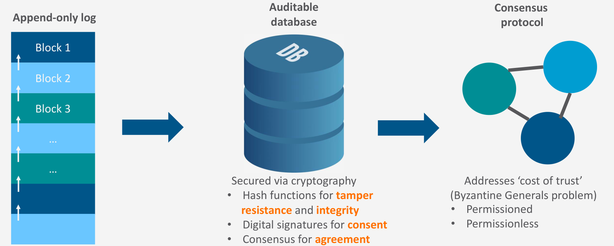

Blockchain: records, signatures and agreement
Digital Business · Course 95696 · WiSe 2026/27
Learning goals
Distinguish blockchain from Bitcoin and explain why integrity, authorization and agreement solve different problems.
Start with the record, not the coin
A blockchain is an append-only, auditable record secured through cryptography and a consensus protocol. “Append-only” describes adding entries to a history, rather than silently overwriting the old record. Auditability concerns the ability to inspect that history. Neither term, on its own, proves that a recorded claim about the outside world is true.
Three building blocks address different tasks. The focused diagram retains their labels and relationships:

Open the diagram at full size.

Read the diagram as a division of responsibilities, not as a chronology in which one component makes the others unnecessary. Hash functions support tamper resistance and integrity; digital signatures express authorization or consent; consensus establishes agreement among participants.
Hash function — integrity. Ask whether the represented data has changed. This alone does not establish whether a real-world event was described honestly.
Digital signature — authorization. Ask whether the entry was authorized using the relevant signing key. This alone does not establish whether all participants accept the same history.
Consensus protocol — agreement. Ask how participants agree on the record. Agreement alone does not establish whether the original input was factually correct.
These boundaries are an original learning interpretation of the separation of functions, not an additional slide quotation. Permissioned and permissionless arrangements differ: participation rules belong in the analysis instead of assuming every blockchain is open to everyone.
Original learning example: a delivery record
Suppose a supplier records “package delivered”. A signed entry can link authorization to a signing key, and an integrity check can expose a changed entry. Agreement on the recorded history still does not demonstrate that the package reached the customer. Checking delivery evidence is a separate task. This example illustrates why a technically consistent ledger does not remove every source of trust.
Bitcoin is one use case
Bitcoin applies a blockchain to financial transaction records; it is not the definition of blockchain, and other cryptocurrencies also exist. In an exam explanation, first identify the record and the coordination problem, then name the application. “Blockchain means Bitcoin” reverses that relationship.
Scope boundary: an external video is assigned. The mechanisms in that video have not been independently processed here; this page does not claim to teach its full technical account.
Understanding pathway
These are own exercises, not official assignment tasks. Write your attempt before opening a hint or answer. Assess reasoning, units, interpretation and assumptions using the criteria; keyword matching does not demonstrate understanding.
1. Reconstruct three different checks
Your attempt: Without looking back, explain how hashes, signatures and consensus contribute to a delivery record. For each, state one conclusion that does not follow. Distinguish blockchain from Bitcoin.
Optional hint
Data integrity, authorization and a shared history answer different questions.
Complete worked answer and criteria
A hash-based integrity check can reveal inconsistency with the reference representation; it does not establish honest input. A valid signature links authorization to the relevant signing key; it does not prove physical arrival or that the key was used by its intended human. Consensus concerns agreement on the record; it does not independently inspect the parcel. Bitcoin is a financial-transaction application of blockchain, not its definition. No particular consensus algorithm is assumed here.
Assessment: Three function/limit pairs and technology/application distinction: 1 point each (4).
2. Audit records without adding incompatible counts
Your attempt: Own simplified audit: 120 entries include 8 with a failed integrity check, 5 lacking a required valid signature and 3 in both groups. All other entries pass these two checks; all 120 appear in the agreed history. Calculate how many fail at least one check and how many pass both. What follows about actual delivery?
Optional hint
Count the overlap once. Agreement on inclusion is not a substitute for either check.
Complete worked answer and criteria
Failures in the union: 8 + 5 − 3 = 10 entries. Passing both: 120 − 10 = 110 entries, or 110/120 = 91.67% (rounded to two decimal places). These are audit counts under the stated criteria, not protocol security probabilities. Inclusion in an agreed history does not repair a failed check. Even 110 passing records do not prove 110 physical deliveries: external evidence remains necessary.
Assessment: Union with overlap, 110 complement, 91.67% with denominator, agreement boundary, physical-world boundary: 1 point each (5).
3. Diagnose an overconfident delivery claim
Your attempt: A report says: “The hash matches, so the supplier told the truth. A signature means every participant agrees. Agreement means the parcel arrived.” Repair each inference and name one additional check on physical delivery.
Optional hint
Do not make one technical function perform all three tasks.
Complete worked answer and criteria
Matching integrity evidence says nothing by itself about whether the original claim was honest. A signature addresses authorization using a key, not agreement among participants. Agreement concerns a common record, not independent verification of arrival. Compare an authorized receipt with shipment identifiers and an independently observed handover, while checking their reliability; these are own operational controls, not features proved by the lecture.
Assessment: Integrity/truth correction, signature/agreement correction, agreement/arrival correction, specific external check and its limit: 1 point each (4).
4. Transfer when the signing key is misused
Your attempt: Own case: 12 records pass integrity checks, carry signatures valid under the registered supplier key and are accepted into the shared history. Independent investigation finds that an intruder used that key to enter one false delivery. Explain what each successful check still shows, what it cannot show and how the record could represent a correction without silently rewriting history.
Optional hint
A valid key signature and an intended human author are not identical.
Complete worked answer and criteria
Integrity can remain intact for all 12 stored claims. Signature verification can succeed for all 12 because the intruder used the registered key; it does not establish intended human consent. Agreement can include the false entry without verifying the parcel. Independent investigation identifies a physical-world/authorization failure, not necessarily an integrity failure. An own design response is to append a clearly linked correction and investigate key control; do not claim the original entry vanished or that this correction workflow is specified in the slides.
Assessment: Integrity result, key/human distinction, agreement boundary, external finding, append-only correction with design limit: 1 point each (5).
Error reflection and delayed retrieval
Maximum 18 self-assessed points (4 + 5 + 4 + 5). Record one incorrect denominator, missing cost or unsupported causal link from your first attempt and correct its explanation. A correct label or final number without reasoning earns no reasoning credit. Tomorrow: reconstruct tasks 1 and 2 unaided. In one week: repeat the transfer with two unsigned records rather than one; identify exactly which evidence changes.
Self-check (SC)
Show the reasoning
b is correct. The separate functions do not verify the physical delivery. a confuses agreement about data with truth outside the system; c mistakes one application for the technology.
Source and limits
02 – Blockchain-5.pdf, current Learnweb course 95696, physical PDF pages 4–6. Rechecked locally on 17 October 2026. Paraphrases and explicitly labelled original learning examples; not an official exam-question set. The original PDF and extracted text remain private. This page covers only the indicated section. Historical examples in the slides are not evidence of present-day adoption, prices, legal status or network performance.
Section-to-source mapping
Record, cryptographic functions and participation rules → physical PDF p. 4.
Diagram → focused excerpt from p. 4; slide attribution: Gensler (2018, MIT).
Bitcoin versus blockchain → p. 5.
External-video scope boundary → p. 6; video not independently processed.
Delivery example and self-check → original application of the distinctions on pp. 4–5.
Understanding pathway → physical PDF pp. 4–5 (integrity, consent, agreement, application distinction). Audit counts, misused-key scenario and correction workflow are own didactic cases, not slide data or a specified consensus/security protocol. Source reread 26 October 2026.